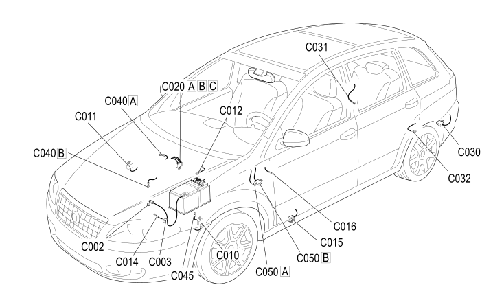

E1020 EARTHS - COMPONENT LOCATION
- Path
- Electrical equipment > 1 ELECTRICAL FUNCTIONS > E10 POWER SUPPLY AND EARTHS > E1020 EARTHS > E1020 EARTHS - COMPONENT LOCATION
- Kind
- component location drawing
- Applies to
- engines: 1.8; all production periods
- Interactive page
- https://sloeber94.github.io/elrnDB-fCrm/en/#/194003059
Applies to: engines: 1.8; all production periods

Component code | Description | Reference to the assembly |
|---|---|---|
BATTERY EARTH ON ENGINE | ||
BATTERY EARTH ON BODYSHELL | ||
LEFT FRONT EARTH | ||
RIGHT FRONT EARTH | ||
ABS FRONT EARTH | ||
ELECTRIC STEERING FRONT EARTH | ||
DRIVER'S DASHBOARD EARTH | ||
AIR CONDITIONING UNIT EARTH | ||
PASSENGER SIDE DASHBOARD EARTH | ||
LEFT REAR EARTH | ||
RIGHT REAR EARTH | ||
REARSCREEN EARTH | ||
EARTH ON ENGINE | ||
FAN EARTH | ||
AIR BAG SYSTEM EARTH |
Topics linked from this page (15)
- C002 BATTERY EARTH ON ENGINE
- C003 BATTERY EARTH ON BODYSHELL
- C010 LEFT FRONT EARTH
- C011 RIGHT FRONT EARTH
- C012 ABS FRONT EARTH
- C014 ELECTRIC STEERING FRONT EARTH
- C015 DRIVER'S DASHBOARD EARTH
- C016 AIR CONDITIONING UNIT EARTH
- C020 PASSENGER SIDE DASHBOARD EARTH
- C030 LEFT REAR EARTH
- C031 RIGHT REAR EARTH
- C032 REARSCREEN EARTH
- C040 EARTH ON ENGINE
- C045 FAN EARTH
- C050 AIR BAG SYSTEM EARTH